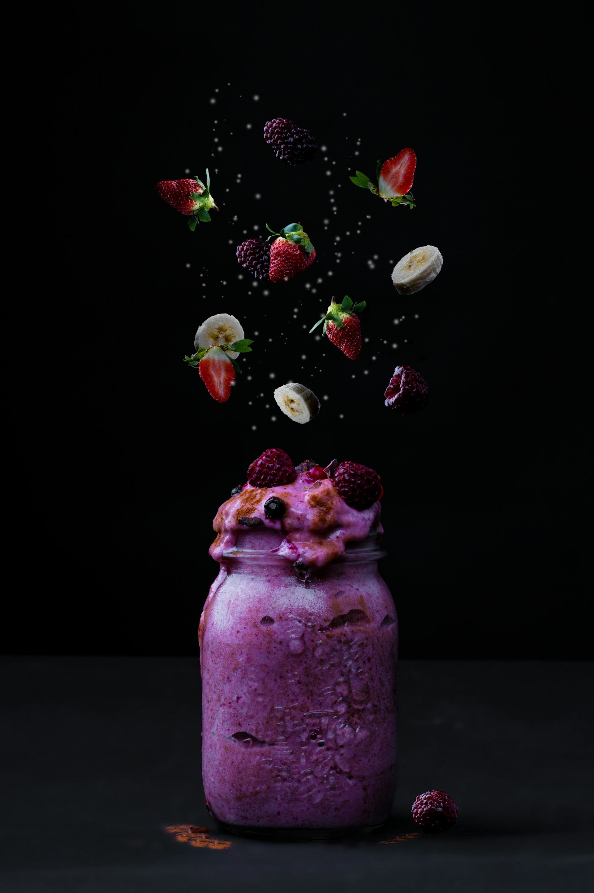

Home
Berry Smoothie Recipe

Photo by Sara Julie on Unsplash
Description
A simple recipe to make a berry smoothie. Recipe sourced from allrecipes.com.
Ingredients
- 2 cups of frozen mixed berries
- 1 sliced frozen banana
- 1 cup of strawberry-flavored yogurt
- 1 cup of milk
Directions
- Place mixed berries, strawberry yogurt, mik, and banana into a blender. Cover and blend until smooth.
- Enjoy!